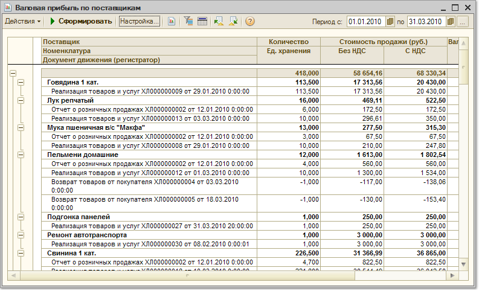

Меню Отчеты > Продажи > Анализ продаж (по поставщикам)
Отчет аналогичен отчету "Валовая прибыль", однако в нем можно дополнительно посмотреть прибыль от продажи товаров в разрезе поставщиков. Для этого в группировках отчета необходимо установить следующий порядок группировки Поставщик>Покупатель>Номенклатура. Данные в отчете можно детализировать не только до уровня документа продажи, но и до уровня документа поставки товаров.
Параметры формирования отчета
По кнопке "Настройка" вызывается форма настройки параметров отчета.
Показатели
В отчете выводится количество проданных товаров, сумма продаж, себестоимость продаж и сумма прибыли, полученной при продаже товаров. При этом в себестоимости товаров учитываются те затраты, которые влияют на себестоимость. Сумма продаж может выводиться с учетом или без учета НДС, отдельно выводится сумма НДС.
Стоимостные характеристики выводятся в валюте управленческого учета. Количественные характеристики могут быть выведены в базовых единицах измерения, в единицах хранения остатков или в единицах отчета.
Валовая прибыль рассчитывается, как разница между суммой продажи (с учетом НДС) и себестоимостью.
В отчет также выводятся два показателя для анализа эффективности и рентабельности продаж:
Производится расчет средних цен продаж за период:
Данные в отчете могут быть отсортированы по любому показателю, в том числе и по степени эффективности или рентабельности продаж. Сортировка данных производится на закладке "Сортировка". Данная закладка доступна, если в отчете включен флаг "Расширенная настройка".
Группировки строк и колонок
Отчет может быть сгруппирован по контрагентам, договорам, сделкам, а также по номенклатурным позициям. Можно детализировать отчет до уровня документа продажи.
Новая группировка добавляется по кнопке "Добавить". В качестве группировки может быть использован любой реквизит документа, в том числе характеристика товара, контрагента и вид документа, связанного с продажей.
Данные в отчете могут быть сгруппированы по свойствам контрагентов (например, для анализа продаж дилеров, дистрибьюторов, розничных покупателей), а также по свойствам товаров (для укрупненного анализа товаров определенного вида, товаров основного производителя и т.д.).
Можно произвести и более детальный анализ продаж в разрезе характеристик и серий товаров. Отчет может быть выведен по предприятию в целом или по каждому подразделению предприятия. Кроме того, для сравнения продаж в различных периодах можно сгруппировать отчет по дням, неделям, месяцам, кварталам, годам.
Отборы
Данные отчета могут быть отфильтрованы по условиям, заданным в блоке "Отборы".
Чтобы добавить вид отбора, щелкните кнопку "Добавить" и выберите поле, по которому будет производиться отбор. Затем задайте Тип сравнения, который определит область поиска заданного значения. Значение отбора выбирается из соответствующего справочника. Значением отбора может быть как отдельный элемент, так и группа и список выбранных элементов.
Значение отбора должно согласоваться с видом сравнения! Например, если необходимо произвести отбор по группе контрагентов "Покупатели", необходимо выбрать вид сравнения "В группе", а если отбор должен производиться по нескольким контрагентам из списка, выберите вид сравнения "В списке" и т.п.
Вид отбора активен, только если в строке вида отбора установлен флаг.
